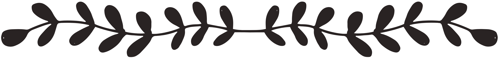

Hi, I'm Jana
- a professional potter and new beginning web developer.
- a professional potter and new beginning web developer.
Ich töpfere sehr gerne.
In meiner eigenen Werkstatt, der
Töpferei am Wald
, stelle ich in liebevoller Handarbeit Geschirr für den Alltag her.
Neuerdings befasse ich mich auch mit Webdevelopment.
Zusammen mit meinem Freund Hannes lerne ich, Webseiten zu erstellen.

Ich mache auch sehr gerne Yoga.
Jeden Morgen freue ich mich, meine Matte auszurollen und ein paar Übungen zu machen.